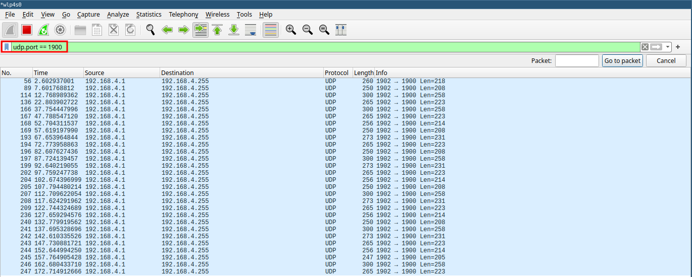

Wireshark
Wireshark is a powerful, open-source network protocol analyzer used for network troubleshooting, analysis, and software and communications protocol development. It allows you to capture and interactively browse the traffic running on a computer network.
Main usages
- Network Troubleshooting: Diagnose network issues and performance problems.
- Security Analysis: Detect network intrusions and analyze suspicious traffic.
- Protocol Analysis: Study and understand network protocols in detail.
- Application Debugging: Debug network-related issues in applications.
- Educational Tool: Learn about network protocols and communication.
How Wireshark works
Wireshark captures packets from a network interface and analyzes them. It uses a library called libpcap (on Unix-like systems) or WinPcap/Npcap (on Windows) to capture packets. The main components of Wireshark are:
- Capture Engine: Captures live network traffic.
- Dissectors: Interpret and analyze various network protocols.
- User Interface: Displays captured data in a human-readable format.
Key features
- Live capture and offline analysis
- Deep inspection of hundreds of protocols
- Multi-platform: Runs on Windows, Linux, macOS, and other Unix-like systems
- Powerful display filters
- Rich VoIP analysis
- Decryption support for many protocols
Command line examples
While Wireshark is primarily a GUI application, it also offers command-line tools like tshark for terminal-based analysis.
Start Wireshark from command line
wireshark
Capture packets on a specific interface
wireshark -i eth0 -k
This command starts Wireshark, captures on the eth0 interface (-i eth0), and immediately starts capturing (-k).
Capture with a filter
wireshark -i eth0 -f "port 80"
This captures only HTTP traffic on eth0.
Read from a capture file
wireshark -r capture.pcap
This opens a previously saved capture file.
Using display filters
Display filters in Wireshark allow you to focus on specific types of traffic. Here are some common filters:
| Filter Purpose | Syntax |
|---|---|
| Show only HTTP traffic | http |
| Show traffic to/from a specific IP | ip.addr == 192.168.1.1 |
| Show TCP traffic on port 80 | tcp.port == 80 |
| Show all traffic except ARP and DNS | !(arp or dns) |

Analyzing packets
To analyze packets in Wireshark:
- Start a capture or open a capture file.
- Apply relevant display filters.
- Click on a packet in the packet list pane to view its details.
- Expand the protocol layers in the packet details pane to examine specific fields.

Tips for effective use
- Use coloring rules to highlight important packets.
- Save frequently used filters as filter buttons.
- Use the "Follow TCP Stream" feature to reconstruct conversations.
- Leverage Wireshark's statistical tools for traffic analysis.